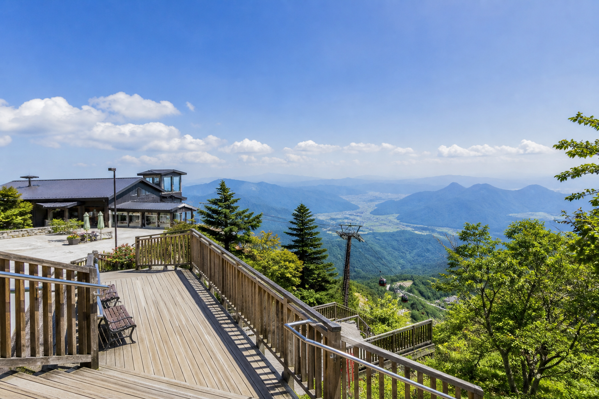
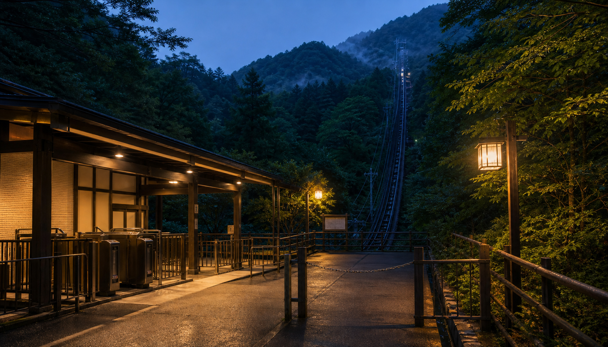

烏野山麓駅
烏野口バス停から徒歩3分。チケット窓口、待合室、コインロッカー、救護室があります。
STATION GUIDE / CBL-0209
山麓駅、山上駅、駐車場、バス停、登山道連絡口の案内です。山上駅は夜間閉鎖されます。

烏野口バス停から徒歩3分。チケット窓口、待合室、コインロッカー、救護室があります。
展望台、山上売店、旧観測所跡、遊歩道入口へ接続します。最終便後は駅舎を閉鎖します。
山麓駅前に普通車72台。繁忙日は臨時駐車場から無料連絡バスを運行します。
ACCESS MEMO
保守作業時は山上駅東側通用口を使用します。一般のお客様は立ち入りできません。閉鎖後に駅放送が聞こえた場合でも、駅舎へ近づかないでください。
